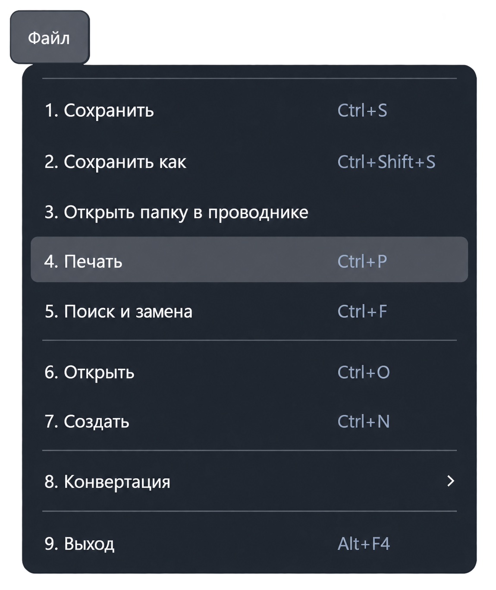

Функция "Печать"
Данная функция печатает содержимое файла.
ВНИМАНИЕ: данная кнопка доступна только когда открыт хотя бы один текстовый редактор!
Путь и вызов
- Нахождение в программе
- Верхнее меню → "Файл" → "Печать"
- Горячие клавиши
- Ctrl + P
На изображении показано нахождение данной функции в программе:

Действия после нажатия
После нажатия горячих клавиш или ЛКМ по кнопке "Печать" откроется менеджер управления принтерами (пр. на рисунок 2). В нём выбираем нужный принтер и печатаем содержание файла.